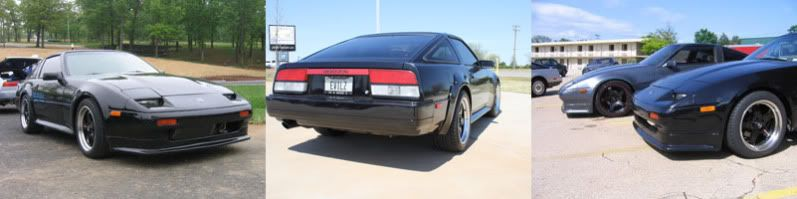
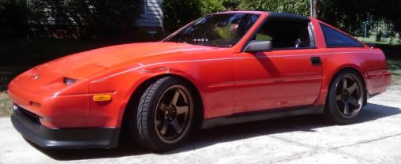

-
Has anybody seen or experienced any quality issues with the ebay air to water intercoolers. I am considering changing my setup but have never seen the inside quality differenced between the spearco and and precision vs the ebay units.
Please do not respond with "you get what you pay for" because i have bought plenty of knock off items that work fine. I am just curious if anybody has had or seen problems with ebay units. This is also not a discussion on how effecient air to water intercooling is, practicality, expenses, reliability.
http://cgi.ebay.com/ebaymotors/liquid-W … ccessories
http://cgi.ebay.com/ebaymotors/CXRacing … ccessories -
I've used CX Racings heat exchangers in my Cobalt SS Supercharged. It was excellent quality and dropped IAT's considerably. I'm now also running a CX Racing IC in my Shiro, same good build quality. I have yet to drive it and see how it performs but I'm confident it will work well. -
My guess would be that the cores are fine but I would run a good brand name pump just because.
With that said, I run a cxracing intercooler on my car and also got the piping kit from them. Cheap and works. Nothing wrong with that.'85 300zx turbo: exhaust, intercooler, coilovers, etc…SOLD, will be missed
'86 300zx turbo: starting over
'97 Dodge 2500: 12v Cummins …selling and will be missed
'94 Jeep Cherokee: D60 Front 14b rear, both locked and 5.38 gears, 37" mtr's
2015 Ram 2500 megacab laramie cummins black appearance package -
I haven't heard of bad things from CX racing, they seem to be one of the best 'ebay' brands of IC's out there.
I agree with 85z31t88 though, I would spring for a high quality/expensive pump. And remember, the larger the reservoir, the more effective it will be.

1988 300zxt. gt35, stance, etc. Wheels: Varrstoen ES2 18x9.5 et-13 225/40. 18x10.5 et0 245/40
1990 jetta vr6'd -
I wouldn't spring for the high end shit considering the cheap intercoolers have proven themselves to work just fine. The core designs are VERY similar if not identical. The results are going to be very similar as far as performance. It's like you said, you have bought the cheap stuff before and it works fine. I too have done the same thing. There are some things that are really hard to fuck up. IC cores being one of them. Really the only thing that can go wrong would be if it leaked. Chances are good all the cores everywhere are the same and made in some China sweat shop anyways.85 Z31 6.0 LSX turbo 766whp/792wtq
04 GTO, LS6, big cam, porting, N20… underway for summertime daily driver. -
go with the CX Racing. 3 inch inlet/outlet is more than enough and I can't imagine why anyone would try to stuff 3.5inch pipes in a z31 with a vg30.
already stuffed as it is, no reason to complicate. -
…Careless wrote: go with the CX Racing. 3 inch inlet/outlet is more than enough and I can't imagine why anyone would try to stuff 3.5inch pipes in a z31 with a vg30.
already stuffed as it is, no reason to complicate.85 Z31 6.0 LSX turbo 766whp/792wtq
04 GTO, LS6, big cam, porting, N20… underway for summertime daily driver. -
Re: Air to water intercooler quality issues??1985 NA2T(now RB) * 1988 SS x2 * 1984 AE x3 * 2006 350Z
 -
[quote]SATAN wrote:Originally posted by CarelessI could say the same thing about you. You haven't said anything worthwhile in a long time. Not once have I seen you post anything with technical merit to accurately refute someone's posts. Instead you pop your head in and act like a wise ass.Originally posted by Careless
Why don't u show me what makes my post a "gem"… let's start there. -
actually i sent the wrong link. im not going to get a 3.5 in/out. im only getting 3in. sorry if i sent the wrong link. i was just using it as an example. -
Re: Air to water intercooler quality issues??1985 NA2T(now RB) * 1988 SS x2 * 1984 AE x3 * 2006 350Z
-
sorry. I meant anyone other than those of whom we can count on like 1 hand.OK85ZX wrote: nono, blanket statements are good, as long as you justify "anyone with a vg30" later on as really only meaning this guy that you thought couldn't be making any power because of a post he made. Carry on. -
Re: Air to water intercooler quality issues??1985 NA2T(now RB) * 1988 SS x2 * 1984 AE x3 * 2006 350Z
-
The actual air to water core is insignificant compared to the pump/heat exchanger/reservoir capacity.
I would focus on a high quality pump and heat exchanger (like the AFCO's used on the Termi Cobras) and building as much volume into the system as possible.
If your going drag racing, remember to incorporate room for ice too.The bullshit stops, when the GREEN light drops.
Only babies cry about the bottle. -
Im planning on doing a similar setup. I have a xs power IC and bosch 12v water pump commonly used on VW and BMW heater systems. It also looks the same as the water pump on my buddys rouch stage 3 stang. its got an air/water IC.
The bosch pump flows around 6 to 8 gallons a min, more than adequate for an air/water setup, and can be had for less than $100.

Copyright © 2006–. All rights reserved. Privacy Policy